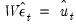
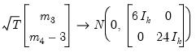
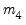
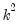
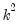
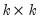
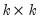

|
|
|
In this section, we discuss views that are specific to VARs. For other views and procedures, see the general discussion of system views in “System Estimation”.You may use the entries under the Residuals and Structural Residuals menus to examine the residuals of the estimated VAR in graph or spreadsheet form, or you may examine the covariance and correlation matrix of those residuals.The views listed under Residuals will display results using the raw residuals from the estimated VAR.Alternately, you may display the Structural Residuals views to examine the these transformed estimated residuals. If the are the ordinary residuals, we may plot the structural residualsbased on factor loadings
,
 roots, where
is the number of endogenous variables and
is the largest lag. If you estimated a VEC with
cointegrating relations,
roots should be equal to unity.
Carries out pairwise Granger causality tests and tests whether an endogenous variable can be treated as exogenous. For each equation in the VAR, the output displays(Wald) statistics for the joint significance of each of the other lagged endogenous variables in that equation. The statistic in the last row (All) is the
-statistic for joint significance of all other lagged endogenous variables in the equation.
, both statistics are approximately distributed
with degrees of freedom where
is the VAR lag order if there are no coefficient restrictions, and where
contains adjustments for the restrictions.
Note that adjustments are made to the computation of the p-value of these statistics when the model is a VECM (Brüggemann, Lütkepohl, and Saikkonen, 2006).This view reports the multivariate extensions of the Jarque-Bera residual normality test, which compares the third and fourth moments of the residuals to those from the normal distribution. For the multivariate test, you must choose a factorization of theresiduals that are orthogonal to each other (see “Impulse Responses” for additional discussion of the need for orthogonalization).

is the inverse of the lower triangular Cholesky factor of the residual covariance matrix. The resulting test statistics depend on the ordering of the variables in the VAR.
is a diagonal matrix containing the eigenvalues of the residual correlation matrix on the diagonal,
is a matrix whose columns are the corresponding eigenvectors, and
is a diagonal matrix containing the inverse square root of the residual variances on the diagonal. This
is essentially the inverse square root of the residual correlation matrix. The test is invariant to the ordering and to the scale of the variables in the VAR. As suggested by Doornik and Hansen (1994), we perform a small sample correction to the transformed residuals
before computing the statistics.
is the diagonal matrix containing the eigenvalues of the residual covariance matrix on the diagonal and
is a matrix whose columns are the corresponding eigenvectors. This test has a specific alternative, which is the quartic exponential distribution. According to Urzua, this is the “most likely” alternative to the multivariate normal with finite fourth moments since it can approximate the multivariate Pearson family “as close as needed.” As recommended by Urzua, we make a small sample correction to the transformed residuals before computing the statistics. This small sample correction differs from the one used by Doornik and Hansen (1994); see Urzua (1997, Section D).
,
are estimated from the structural VAR model. This option is available only if you have estimated the factorization matrices
and
using the structural VAR (see (here)).
EViews reports test statistics for each orthogonal component (labeled RESID1, RESID2, and so on) and for the joint test. For individual components, the estimated skewness and kurtosis are reported in the first two columns together with the p-values from thedistribution (in square brackets). The Jarque-Bera column reports:
will not only use the sum of squares of the “pure” third and fourth moments but will also include the sum of squares of all cross third and fourth moments. In this case,
is asymptotically distributed as a
with degrees of freedom.
These tests are the extension of White’s (1980) test to systems of equations as discussed by Kelejian (1982) and Doornik (1995). The test regression is run by regressing each cross product of the residuals on the cross products of the regressors and testing the joint significance of the regression. The No Cross Terms option uses only the levels and squares of the original regressors, while the With Cross Terms option includes all non-redundant cross-products of the original regressors in the test equation. The test regression always includes a constant term as a regressor.To perform the test, select Views/Cointegration Test... from an estimated VAR object window using. In the latter case, the test dialog will be pre-filled with information from the VAR (or VEC) specification:Enter the lag specification and exogenous variables specifications in the appropriate edit fields, and specify the deterministic trend specifications using the dropdown. The Summarize all deterministic case assumptions checkbox may be used to compute the test statistic for all of the deterministic trend cases.See “Johansen Cointegration Test” for a description of the basic test methodology and test settings. See also “The VECM Specification” and “Estimating VEC Models in EViews” for a discussion of VEC specifications.Bear in mind that the Lag intervals lag specification for is for the error correction form of the VEC model, not the levels of a VAR. If performing the test on a specification in levels as in an ordinary VAR, the lag structure will differ in the test equation.Similarly, note that exogenous variables in a VAR will be placed in the Short-run (outside cointegrating equation) edit field, which may not be the desired test specification in the error correction form of the VEC.Many of the diagnostic tests given above may be computed “manually” by estimating the VAR using a system object and selecting View/Wald Coefficient Tests... We caution you that the results from the system may not match those from the VAR diagnostic views for various reasons:Interpreting VAR results can be difficult due to the complex interdependence between variables, their lags, and the large number of coefficients in the model. Notably, a shock to the i-th variable not only directly affects the i-th variable but is also transmitted to all of the other endogenous variables through the dynamic (lag) structure of the VAR.EViews offers a wide range of options for computing impulse-responses, estimating the precision of those estimates, and displaying the results. “Impulse Response Analysis” offers background and a description of these tools.While impulse response functions trace the effects of a shock to one endogenous variable on to the other variables in the VAR, variance decomposition separates the variation in an endogenous variable into the component shocks to the VAR. Thus, the variance decomposition provides information about the relative importance of each random innovation in affecting the variables in the VAR.To obtain the variance decomposition, select View/Variance Decomposition... from the VAR object toolbar. You should provide the same information as for impulse responses above.Note that since non-orthogonal factorization will yield decompositions that do not satisfy an adding up property, your choice of factorization is limited to the Cholesky Decomposition and the Structural Decomposition, the latter if available.Factorization based on structural orthogonalization is available only if you have estimated the structural factorization matrices as explained in “Structural (Identified) VARs”. Note that the forecast standard errors should be identical to those from the Cholesky factorization if the structural VAR is just identified. For over-identified structural VARs, the forecast standard errors may differ in order to maintain the adding up property.As with the output for impulse responses (“Impulse Responses”), the resulting output is interactive. You may click on any of the Output Views node entries to change the display type. Here we see a Stacked graphs representation of the decomposition.Similarly, you may click on the Decompositions node under Variables and toggle on the variable names to show or hide the display of the decomposition of specific variables.To obtain the historical decomposition, select View/Historical Decomposition... from the VAR object toolbar. You should provide the same information as for impulse responses and variance decomposition above.In addition, you may use the Include baseline in decomposition to choose whether to include the base projection in the decomposition, or whether to plot only the stochastic accumulations and total.Lastly, you may use the edit fields to specify an optional Start and End period to the decomposition. Both periods must be within the range of the original estimation period. If you leave the fields blank, EViews will perform the decomposition from the start to the end of the full estimation period.Most of the procedures available for a VAR are common to those available for a system object (see “System Procs”). Here, we discuss only those procedures that are unique to the VAR object.You may produce forecasts directly from an estimated VAR object by clicking on the Forecast button or by selecting Proc/Forecast. EViews will display the forecast dialog:First, the fields in which you enter the forecast name and optional S.E. series names now refer to the character suffix which you will use to form output series names. By default, as depicted here, EViews will append the letter “f” to the end of the original series names to form the output series names. If necessary, the original name will be converted into a valid EViews series name.Second, if you choose to compute standard errors of the forecast, EViews will obtain those values via simulation. You will be prompted for the number of Simulation repetitions, and the “% failed reps before halting” the simulation setting.Lastly, in addition to a Forecast evaluation, you are given a choice of whether to display the output graphs as Individual graphs, as Multiple graphs, or both.Clicking on OK instructs EViews to perform the forecast and, if appropriate to display the output:This proc creates a system object that contains an equivalent VAR specification. If you want to estimate a non-standard VAR, you may use this proc as a quick way to specify a VAR in a system object which you can then modify to meet your needs. For example, while the VAR object requires each equation to have the same lag structure, you may want to relax this restriction. To estimate a VAR with unbalanced lag structure, use the Proc/Make System procedure to create a VAR system with a balanced lag structure and edit the system specification to meet the desired lag specification.The By Variable option creates a system whose specification (and coefficient number) is ordered by variables. Use this option if you want to edit the specification to exclude lags of a specific variable from some of the equations. The By Lag option creates a system whose specification (and coefficient number) is ordered by lags. Use this option if you want to edit the specification to exclude certain lags from some of the equations.You should also note that while the standard VAR can be estimated efficiently by equation-by-equation OLS, this is generally not the case for the modified specification. You may wish to use one of the system-wide estimation methods (e.g., SUR) when estimating non-standard VARs using the system object.This procedure is used to estimate the factorization matrices for a structural (or identified) VAR. The details for this procedure are provided in “Structural (Identified) VARs” below. You must first estimate the structural factorization matrices using this proc in order to use the structural options in impulse responses and variance decompositions.
 ,
, (Wald) statistic for the joint significance of all endogenous variables at that lag is reported for each equation separately and jointly (last column).
(Wald) statistic for the joint significance of all endogenous variables at that lag is reported for each equation separately and jointly (last column). are jointly zero using the
are jointly zero using the  statistics:
statistics: is the number of parameters per equation under the alternative. Note that we employ Sims’ (1980) small sample modification which uses () rather than
is the number of parameters per equation under the alternative. Note that we employ Sims’ (1980) small sample modification which uses () rather than  . We compare the modified LR statistics to the 5% critical values starting from the maximum lag, and decreasing the lag one at a time until we first get a rejection. The alternative lag order from the first rejected test is marked with an asterisk (if no test rejects, the minimum lag will be marked with an asterisk). It is worth emphasizing that even though the individual tests have size 0.05, the overall size of the test will not be 5%; see the discussion in Lütkepohl (1991, p. 125–126).
. We compare the modified LR statistics to the 5% critical values starting from the maximum lag, and decreasing the lag one at a time until we first get a rejection. The alternative lag order from the first rejected test is marked with an asterisk (if no test rejects, the minimum lag will be marked with an asterisk). It is worth emphasizing that even though the individual tests have size 0.05, the overall size of the test will not be 5%; see the discussion in Lütkepohl (1991, p. 125–126). is small. In fact, the degrees of freedom becomes negative for .
is small. In fact, the degrees of freedom becomes negative for . is computed by running an auxiliary regression of the residuals
is computed by running an auxiliary regression of the residuals  on the original right-hand regressors and the lagged residual , where the missing first
on the original right-hand regressors and the lagged residual , where the missing first  values of
values of  are filled with zeros.
are filled with zeros. , the LM statistic is asymptotically distributed
, the LM statistic is asymptotically distributed  with  degrees of freedom.
with  degrees of freedom.  . The test modifies the LM statistic above by including all of the modified lagged residual regressors from . Under the null hypothesis, the LM statistic is asymptotically
. The test modifies the LM statistic above by including all of the modified lagged residual regressors from . Under the null hypothesis, the LM statistic is asymptotically  with degrees of freedom.
with degrees of freedom. be a  factorization matrix such that:
be a  factorization matrix such that: is the demeaned residuals. Define the third and fourth moment vectors and . Then:
is the demeaned residuals. Define the third and fourth moment vectors and . Then: -statistic by summing squares of any of these third and fourth moments.
-statistic by summing squares of any of these third and fourth moments. :
: with degrees-of-freedom , where is the number of cross-products of the residuals in the system and
with degrees-of-freedom , where is the number of cross-products of the residuals in the system and  is the number of the common set of right-hand side variables in the test regression.
is the number of the common set of right-hand side variables in the test regression. rather than by
rather than by  ), while the VAR estimates do perform this adjustment. Even though estimated using comparable specifications and yielding identifiable coefficients, the test statistics from system SUR and the VARs will show small (asymptotically insignificant) differences.
), while the VAR estimates do perform this adjustment. Even though estimated using comparable specifications and yielding identifiable coefficients, the test statistics from system SUR and the VARs will show small (asymptotically insignificant) differences.